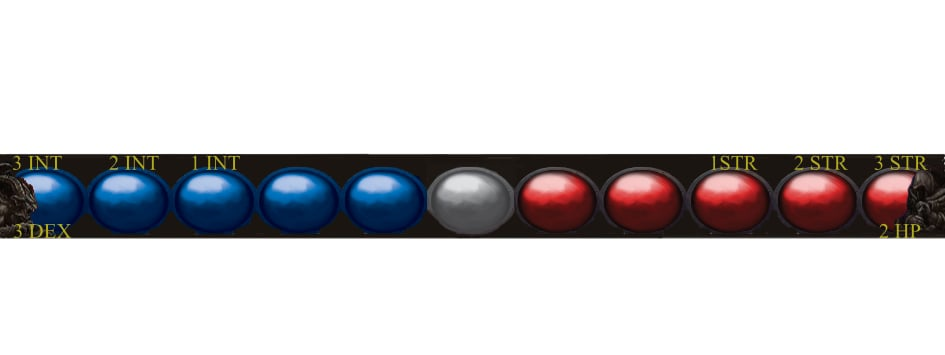

Umiejętność 1 - "Dieta – Raz na ture Maniek może zdecydować, czy przybierać na postać czy chudnie (maksymalnie o 1 w jedną stronę). Punkty Życia mogą być odnawiane dopiero, gdy Maniek osiągnie 0 wagi.

Umiejętność 2 - Zmiana diety – Jeśli Maniek wyrzuci 6 na kostce, może zmniejszyć swój stan o 2 pola zamiast 1.
Umiejętność 3 - Siła Przekonań – Raz na walkę, jeśli przeciwnik jest lewakiem, Maniek może otrzymać +2 do wyniku jednego ze swoich kości.
Umiejętność 4 - Skalowanie – Statystyki Mańka może rosnąć wraz z postępem gry.